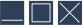
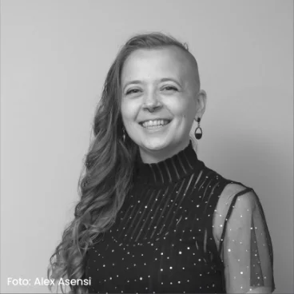
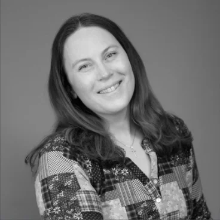
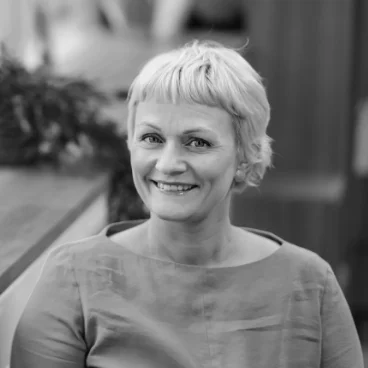
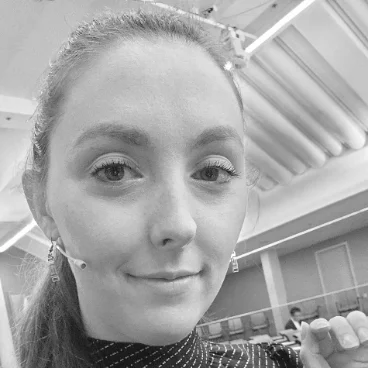
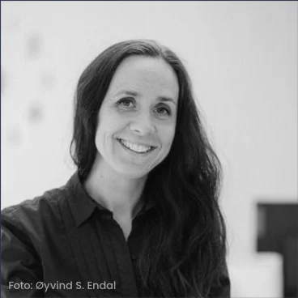
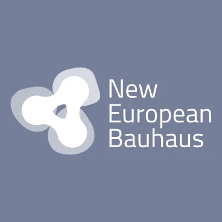

- 11. mars
- kl. 11-16.30
- Eureka 2/3
- 240 plasser
- 6-8 talere

Emne: Sammen skaper vi // simul creamus
Det er Temaet for årets designdag!
Designdagen er en årlig konferanse for designinteresserte studenter ved NTNU. Arrangementet er av og for medlemmer i Darling Linjeforening. Det er ingen påmelding, det er bare å komme!
Vi har 6 spenende talere i år! (og en workshop) Se hvem og hva de skal snakke om under her:
Talere

Grafill: A place to create, collaborate and grow
Liz Ramsey: Arrangementskoordinator i Grafill
Design i tverrfaglige team
Lana Hansen: Inhouse designer i bedriften Norseye

Hvordan bli mer kreativ
Kristine Sveum: Mediegrafiker og Webutvikler i Sveum design

Design Jam som arena for kulturendring
Trude J. Arntzen: Innovasjonsleder i NTNU

Tverrfaglig fra dag én
Carly Grace Allen: PhD Stipendiat fra NTNU og Senior UX Designer

Grafisk design møter arkitektur
Sarah Engan Johansen: Partner & daglig leder i frostøyk

[WORKSHOP] Regenerativ Nabolag – New European Bauhaus
Tassy Ellen Thompson PhD